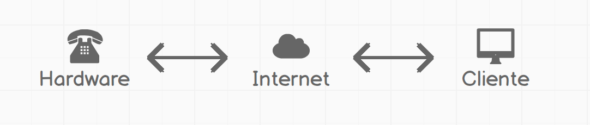

IOT.JS
Johnny Five + socket.io
por Iddar Olivares / @iddar
Descarga el codigo de la practia desde aquí
Internet de la cosas
Temario
- El hardware
- El server
- La web
El hardware

Anatomia: Johnny Five
- Board
- Eventos
- Devices & Drives
Creando el board
'use strict'
const Five = require('johnny-five')
const board = new Five.Board({repl: false})
board.on('ready', () => {
.......
.......
.......
})
Board + Devices & Drives
'use strict'
const Five = require('johnny-five')
const board = new Five.Board({repl: false})
board.on('ready', () => {
let devices = {}
devices.lcd = new Five.LCD({
controller: 'JHD1313M1'
})
callback(null, devices)
})
Board + Devices & Drives + Commonjs
'use strict'
const Five = require('johnny-five')
const board = new Five.Board({repl: false})
function setup (callback) {
board.on('ready', () => {
let devices = {}
devices.lcd = new Five.LCD({
controller: 'JHD1313M1'
})
callback(null, devices)
})
}
module.exports = setup
El server

Modulos del server
- HTTP Server
- Websocket Server
- Eventos
HTTP Server
'use strict'
const express = require('express')
const app = express()
const http = require('http').Server(app)
const path = require('path')
function server (config) {
const PORT = process.env.PORT || config.PORT
const pub = path.resolve(__dirname, '..', 'public')
app.use(express.static(pub))
http.listen(PORT, () => {
console.log('http://localhost:' + PORT)
})
return http
}
module.exports = server
Websocket Server
'use strict'
const SocketIo = require('socket.io')
function socketServer (server, callback) {
const io = SocketIo(server)
io.on('connection', (socket) => {
console.log('Socket.io Ok')
callback(socket)
})
}
module.exports = socketServer
Eventos
'use strict'
const onStartSocket = (devices, socket) => {
socket.on('text', (message) => {
devices.lcd.clear().print(message)
})
socket.on('color', (rgbColor) => {
devices.lcd.bgColor(rgbColor.r, rgbColor.g, rgbColor.b)
})
}
module.exports = onStartSocket
La web
Modulos de la web
- HTML
- CSS
- JS
HTML
CSS
body {
display: flex;
align-items: center;
flex-direction: column;
background: #bababa;
}
.form {
flex: 1;
display: flex;
align-items: center;
height: 100vh;
}
......
JS
'use strict'
const socket = io.connect(window.location.origin)
const inputs = document.getElementsByTagName('input')
const text = inputs[0]
const color = inputs[1]
JS
const debounceInput = _.debounce((event) => {
const value = event.target.value
socket.emit('text', _.deburr(value))
console.log(value)
}, 150)
const debounceColor = _.debounce((event) => {
const value = event.target.value
socket.emit('color', hexToRgb(value))
console.log(hexToRgb(value))
}, 25)
text.focus()
text.addEventListener('input', debounceInput)
color.addEventListener('input', debounceColor)
El resultado
Gracias

http://github.com/iddar/slides
Descarga el codigo de la practia desde aquí